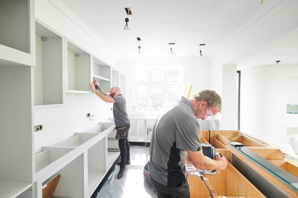

Mount Oliver Pennsylvania
info@innovativeremodelingkb.pro
Mount Oliver Pennsylvania
info@innovativeremodelingkb.pro

Transform your home with expert bathroom and kitchen remodeling in Mount Oliver Pennsylvania . We create stunning, functional spaces tailored to your style and budget. Experience unparalleled craftsmanship and attention to detail!
Click Here To Call Us (877) 848-1711Transform your home with top-notch bathroom and kitchen remodeling services in Mount Oliver Pennsylvania . Our team of skilled professionals specializes in creating beautiful, functional spaces tailored to your unique needs. Whether you're looking to upgrade your outdated kitchen, enhance your bathroom’s aesthetics, or maximize space efficiency, we’ve got you covered.
At Bathroom and Kitchen Remodeling, we understand that your kitchen and bathroom are the heart of your home. That’s why we prioritize innovative designs, premium materials, and expert craftsmanship. From sleek countertops and energy-efficient appliances to luxurious walk-in showers and custom cabinetry, every detail is handled with precision.
Why choose us? We pride ourselves on delivering exceptional results within budget and on schedule. Our customer-centric approach ensures transparent communication, personalized designs, and solutions that exceed expectations. With years of experience, our team has earned a reputation for quality and reliability across Mount Oliver Pennsylvania .
We also emphasize eco-friendly remodeling options, helping you create a sustainable home while adding value to your property. Whether it’s a modern kitchen makeover or a spa-like bathroom upgrade, our experts are here to bring your vision to life.
Ready to revamp your space? Contact us today for a free consultation and discover why homeowners in Mount Oliver Pennsylvania trust us for all their remodeling needs. Let us turn your dream home into a reality!
Residential & commercial Bathroom and Kitchen Remodeling
Quality services at affordable prices
Immediate 24/ 7 emergency services


At Bathroom and Kitchen Remodeling, we specialize in delivering exceptional bathroom and kitchen renovations across Mount Oliver Pennsylvania . With years of experience and a commitment to quality, we ensure every renovation project meets the highest standards of craftsmanship, design, and functionality.
Expert Craftsmanship and Design
Our team of skilled professionals understands that your bathroom and kitchen are more than just rooms—they are spaces where you spend time and create memories. Whether you need a complete remodel or a minor update, we work closely with you to design and execute renovations that reflect your unique style while maximizing space and functionality. Our attention to detail and dedication to perfection set us apart from other contractors in Mount Oliver Pennsylvania .
Tailored Renovation Solutions
We know that each project is different, which is why we offer tailored renovation solutions designed to meet your specific needs and budget. From modern kitchen makeovers to spa-like bathroom retreats, our team is ready to bring your vision to life with the latest trends and durable materials that stand the test of time.
Affordable and Transparent Pricing
At Bathroom and Kitchen Remodeling, we believe in providing high-quality renovations at competitive prices. Our transparent pricing ensures that there are no hidden costs, and you’ll always know exactly what to expect. We aim to provide you with an outstanding return on your investment, adding both value and beauty to your home.
Choose us for your Mount Oliver Pennsylvania bathroom and kitchen renovations, and experience the difference of working with a trusted, professional team dedicated to transforming your home into a space you’ll love.
Residential & commercial Bathroom and Kitchen Remodeling
Quality services at affordable prices
Immediate 24/ 7 emergency services
Upgrading countertops is one of the most impactful renovations you can make to your kitchen. At Bathroom and Kitchen Remodeling, we offer a variety of countertop materials such as granite, quartz, and custom composites that suit any style preference. Our wide selection allows you to choose surfaces that are not only beautiful but also durable and easy to maintain. Our team’s expertise ensures precise installation, transforming your kitchen into a sophisticated culinary space. By opting for countertop upgrades with us, enjoy a combination of style, quality, and practicality.

Sustainable living starts in the kitchen. Our eco-friendly kitchen remodeling services at Bathroom and Kitchen Remodeling are designed for those who want to make environmentally conscious choices. We incorporate sustainable materials, energy-efficient appliances, and innovative designs that minimize your carbon footprint. Our team understands the importance of blending sustainability with aesthetics, and we work hard to bring your vision to life without compromising on style or functionality. Let us help you create a greener kitchen that's both beautiful and eco-friendly, ensuring a better future for the planet.
A beautiful backsplash can be the finishing touch that enhances your kitchen's beauty and functionality. Our backsplash installation and upgrades offer endless possibilities for materials, colors, and designs that can elevate the overall look of your kitchen. Whether you prefer classic subway tiles, elegant mosaics, or contemporary glass, we will work with you to select the ideal backsplash that aligns with your vision. Our skilled craftsmen ensure precise installations that are durable and visually striking. Count on us to provide an upgrade that adds both value and style to your kitchen.
Upgrading your kitchen appliances can significantly enhance your cooking experience and energy efficiency. Our kitchen appliance upgrades and integration services offer a comprehensive approach to selecting and installing high-quality appliances suited to your culinary needs. We guide you in choosing energy-efficient options that seamlessly integrate with your existing design, ensuring that aesthetics and functionality go hand in hand. Our expert installation team guarantees that your new appliances are set up for optimal performance and ease of use. Trust us for professional guidance and installation for your kitchen appliance upgrades.

Embrace the charm of country living with our stunning farmhouse kitchen designs at Bathroom and Kitchen Remodeling. Our team specializes in creating warm and inviting spaces that blend rustic charm with modern convenience. From shiplap walls and vintage accents to spacious islands and handcrafted cabinetry, we ensure that your farmhouse kitchen reflects your personality and lifestyle. Our designers take the time to understand your vision, carefully crafting a space that brings the best of farmhouse aesthetics into your home. With our vast experience transforming kitchens in Mount Oliver Pennsylvania we are known for our outstanding quality and commitment to customer satisfaction. Why choose us? Our passion for design and attention to detail ensure that your farmhouse kitchen is both functional and stylish, creating a cozy heart for your home.
If you appreciate clean lines and functional design, our modern minimalist kitchen solutions are perfect for you. At Bathroom and Kitchen Remodeling, we specialize in creating sleek, clutter-free spaces that prioritize usability and style. Our team focuses on simplicity and elegance, utilizing high-quality materials and innovative storage solutions that keep your kitchen looking tidy while still exuding sophistication. Transform your cooking area into a modern minimalist haven that emphasizes form and function with our expertly crafted designs.

As technology advances, so should your kitchen. Our smart kitchen technology integration services allow you to enhance your kitchen's functionality with state-of-the-art gadgets and automated systems. Imagine controlling your lighting, appliances, and security with just a few taps on your smart device. Our team stays updated with the latest innovations and will design a kitchen that incorporates advanced technologies tailored to your lifestyle. Whether it’s voice-activated devices or energy-efficient gadgets, we help you create a modern kitchen that streamlines daily tasks and truly enhances your experience.

Transform your backyard into a culinary paradise with our outdoor kitchen construction services. Outdoor kitchens extend your living space and allow you to enjoy cooking and dining al fresco. We specialize in designing outdoor kitchens that integrate cooking stations, prep areas, and entertainment spaces, all constructed with weather-resistant materials tailored for outdoor functionality. Our skilled team will partner with you to ensure your outdoor kitchen meets your needs and complements your home’s architecture. Choose us for outdoor kitchen construction and enjoy the freedom of cooking amidst nature.

Effective lighting and electrical systems are integral to any functional kitchen. Our lighting and electrical upgrades ensure that your kitchen is well-lit and equipped for all your culinary needs. We tailor lighting solutions that enhance the ambiance while providing appropriate illumination for cooking and entertaining. Whether it's under-cabinet lighting, statement pendant fixtures, or enhanced outlets for technology integration, our team ensures expert installation and compliance with safety standards. With our focus on quality and aesthetics, choose us to brighten up your kitchen space and optimize your electrical functionality.
Years Experience
Expert Technicians
Satisfied Clients
Compleate Projects
At Innovative Remodeling KB, we specialize in transforming your bathroom and kitchen into luxurious, functional spaces that reflect your unique style. Serving Mount Oliver Pennsylvania we are committed to providing high-quality remodeling solutions with exceptional craftsmanship and attention to detail. Whether you're looking to revamp your kitchen with modern designs or create a spa-like bathroom retreat, our team is here to bring your vision to life.
Our experienced professionals use the latest industry trends and the finest materials to ensure long-lasting and beautiful results. We prioritize customer satisfaction by offering personalized designs, ensuring that every detail aligns with your needs and preferences. From the initial consultation to the final walk-through, we guide you through every step of the remodeling process, ensuring transparency and reliability.
Innovative Remodeling KB stands out for our superior project management and punctuality. We understand the importance of minimizing disruptions in your daily life, so we work efficiently and respect your schedule. Our commitment to quality, combined with competitive pricing, makes us the trusted choice for homeowners across Mount Oliver Pennsylvania .
When you choose Innovative Remodeling KB, you're selecting a team that values craftsmanship, innovation, and customer care. Let us help you create the kitchen or bathroom of your dreams—call us today to get started on your next remodeling project in Mount Oliver Pennsylvania .
In today's world, ensuring your bathroom acts as a serene oasis is paramount. Luxury bathroom remodeling elevates your home not just in aesthetics but in functionality and comfort. Our team specializes in creating exquisite environments that blend modern design with timeless elegance. From high-end fixtures and custom cabinetry to unique tile patterns and chic lighting, we provide a curated remodeling experience that caters to your personal tastes while elevating your property's value. With meticulous attention to detail and a commitment to quality, you can trust us to transform your vision into a reality. Choose us to experience unparalleled craftsmanship and a design process tailored just for you.
Transforming a small bathroom does not have to mean sacrificing style or functionality. Small bathroom renovations are an area where our design expertise shines. At Bathroom and Kitchen Remodeling, we understand the unique challenges posed by limited space, and we specialize in innovative solutions that maximize every inch. From clever storage solutions to space-saving fixtures, we work tirelessly to create a small bathroom that feels expansive and welcoming. Our team stays updated on the latest trends and technology, ensuring that each project incorporates modern convenience. With an emphasis on both aesthetics and practicality, we collaborate with you to produce a stylish sanctuary that meets your specific needs. Whether you're looking to refresh your decor or undertake a complete renovation, our experience makes us the ideal partner for your small bathroom project. Choose us for our dedication to quality, personalized service, and our track record of delighted customers.
Transforming your bathroom with a walk-in shower installation provides an elegant solution to enhance accessibility and style. Walk-in showers are not only functional but can also be a centerpiece of modern bathroom design. Our skilled installers use high-quality materials to create custom walk-in shower solutions that cater to your preferences. Whether you desire sleek glass enclosures, luxurious tiles, or innovative storage solutions, we have you covered. Our commitment to client satisfaction means we listen to your needs and deliver a flawless installation process, making us the go-to choice for walk-in shower installations .
Want to retire your old tub for a sleek shower? Our bathtub-to-shower conversions are the perfect solution for those seeking to maximize their bathroom space. We specialize in transforming underutilized bathtubs into modern showers that not only look great but also function efficiently. With various designs and fixtures, our experienced team will help you choose the best layout that suits your lifestyle and preferences. In Mount Oliver Pennsylvania we pride ourselves on using high-quality materials and skilled craftsmanship, ensuring that your new shower is not only beautiful but also built to last. With our innovative designs and professional approach, enjoy a more practical bathing experience with our bathtub-to-shower conversions.
The vanity is often the centerpiece of a bathroom. Our custom vanity installations allow you to express your style while providing essential storage and functionality. We work with you to design a vanity that meets your needs, whether you prefer sleek modern lines or charming farmhouse aesthetics. Our attention to detail sets us apart; we ensure that your custom vanity integrates seamlessly with the overall design of your bathroom. From selection of materials to installation, our experienced team maintains the highest standards, ensuring you receive a product that is both beautiful and enduring.
A master bathroom should serve as your personal retreat. Our master bathroom remodeling services are centered around creating a space that combines luxury, comfort, and functionality. Our experienced team will guide you through the design process, helping to choose the right fixtures, finishes, and layouts that suit your lifestyle. Whether you dream of a spa-like atmosphere or a sleek modern aesthetic, we have the expertise to bring your vision to life. We pride ourselves on our attention to detail and commitment to quality, ensuring your master bathroom remodel is completed on time and within budget.
A powder room renovation is a chance to showcase your style in a small, yet impactful space. At Bathroom and Kitchen Remodeling, we believe that even the most modest areas have the potential to leave a lasting impression. Our experts specialize in creating stunning powder rooms that combine elegance and functionality, maximizing the limited space without compromising on style. From custom sinks and beautiful wall treatments to innovative lighting solutions, we ensure that your powder room becomes an inviting and stylish representation of your taste. Our collaborative approach allows you to express your vision while benefiting from our design knowledge and craftsmanship. With numerous successful renovations we are well-equipped to transform your powder room into a standout feature of your home. Why choose us? Our dedication to quality, personalized service, and innovative design solutions make us the top choice for powder room renovations.
Upgrading your bathroom tile and flooring can revolutionize the overall aesthetic of your space. Our bathroom tile and flooring upgrades are tailored to suit any design style, from classic to contemporary. We offer a wide selection of tiles, including ceramic, porcelain, glass, and natural stone, allowing you to customize your bathroom’s look. Alongside flooring, we pay close attention to grout and layout to ensure durable and beautiful results. Our skilled crews utilize meticulous installation techniques, ensuring your bathroom flooring updates not only look great but stand up to moisture and daily wear.
Sustainability is key in today’s home design, and our eco-friendly bathroom remodeling service is dedicated to creating beautiful spaces that are kind to the planet. We use sustainable materials, energy-efficient fixtures, and water-saving technologies, resulting in a bathroom that is not only luxurious but also environmentally responsible. Our team stays current with eco-friendly trends and practices, ensuring your bathroom reflects a commitment to sustainability without sacrificing aesthetics or comfort. Working with us means you can renovate your space while making a positive impact on the environment.
At the heart of accessible bathroom designs is the commitment to safety and usability. Our ADA-compliant bathrooms are meticulously designed to offer comfort and ease for everyone, regardless of mobility. We consider every detail from grab bars and non-slip flooring to spacious layouts that accommodate wheelchairs. Our designers work closely with you to personalize the space to your specific needs. Choosing us means you’ll benefit from our knowledge and expertise in accessible design, ensuring that functionality is seamlessly integrated with aesthetic beauty.
Imagine walking into your bathroom and feeling as though you’ve entered a tranquil spa. Our spa-style bathroom transformations create relaxing environments equipped with features that promote peace and relaxation—think luxurious soaking tubs, soothing lighting, and natural materials. We focus on creating spaces tailored to your idea of serenity, whether that means a minimalist design or a lush, earthy feel. Our expert team collaborates with you from concept to completion, ensuring every aspect is perfect. Choose us for your spa-style transformation and make everyday moments feel like a getaway.
Proper lighting is crucial in any bathroom remodel, significantly impacting both functionality and aesthetic appeal. At Bathroom and Kitchen Remodeling, we specialize in strategic bathroom lighting upgrades that enhance the beauty of your space. Our experienced professionals in Mount Oliver Pennsylvania understand the different layers of lighting needed, from task lighting around mirrors to ambient light creating a warm ambiance. We'll guide you in selecting modern fixtures, energy-efficient LED options, and creative solutions that illuminate your bathroom beautifully. Upgrade your lighting with us, and see how it transforms your bathroom into a welcoming environment.
Maximizing storage without sacrificing style is key in any bathroom. Our custom bathroom cabinetry solutions are tailored to suit your unique space and needs. We will design cabinets that provide ample storage while reflecting your personal design style, be it modern, classic, or somewhere in between. Our dedicated craftsmen utilize top-quality materials and construction techniques, ensuring your cabinetry is not just beautiful but durable as well. Working with us means investing in cabinetry that elevates your bathroom experience and aligns perfectly with your vision.
Behind every beautiful bathroom is a robust plumbing system ensuring everything runs smoothly. Our bathroom plumbing upgrades focus on enhancing the efficiency and reliability of your plumbing without compromising on style. We offer a full range of services, from replacing outdated fixtures to complete repiping. Our licensed professionals ensure that your plumbing meets modern standards, providing you peace of mind and lowering your water bills. Let us help you with plumbing solutions that improve functionality while elevating your overall bathroom experience.
A beautifully designed shower enclosure can elevate your bathroom's style while improving functionality. At Bathroom and Kitchen Remodeling, we specialize in stylish and durable shower enclosure installations that cater to various design preferences. Whether you prefer a sleek frameless glass enclosure or a traditional framed design, our experienced team works with you to determine the best solution for your space. We use premium materials and cutting-edge techniques to ensure your installation is flawless and built to last. Our dedication to craftsmanship and customer service has made us a trusted name bathroom renovations. Why choose us? We are committed to turning your vision into reality while providing professional and timely service to ensure your complete satisfaction.
The kitchen is often the heart of the home—a gathering place for family and friends. Our custom kitchen remodeling services help you create the ultimate space tailored to your lifestyle. At Bathroom and Kitchen Remodeling, we specialize in transforming kitchens into functional, stylish, and welcoming environments. From layout optimization and custom cabinetry to stunning countertops and backsplashes, our expert designers will guide you through every decision. We take the time to understand your needs and preferences, ensuring that the final product reflects your taste and enhances your daily life. With extensive experience we have built a reputation for quality, attention to detail, and customer satisfaction. Choose us for our innovative designs, reliable service, and commitment to turning your culinary dreams into reality.
Elevate your culinary space with our luxury kitchen renovations. We bring sophistication and elegance to life with top-of-the-line appliances, premium materials, and innovative designs. Our personalized approach ensures that we listen to your desires and create a kitchen that meets both your aesthetic and functional needs. Imagine high-end finishes, expansive countertops, and smart storage solutions that make cooking easier and more enjoyable. Choose us for your luxury kitchen renovation, and experience craftsmanship that enhances your lifestyle while adding significant value to your home.
Even the smallest kitchens can be transformed into efficient and stylish spaces with our small kitchen makeover services in Mount Oliver Pennsylvania . Our team specializes in creative solutions that maximize storage and functionality within limited space while maintaining an inviting aesthetic. From clever cabinetry design to innovative layout adjustments, we can drastically improve your kitchen’s workflow and appearance. We pride ourselves on delivering exceptional service and craftsmanship at every step. With our expertise, your small kitchen makeover will maximize every inch while reflecting your unique style.
Embrace modern living with our open concept kitchen designs that foster connectivity and space. At Bathroom and Kitchen Remodeling, we recognize that an open kitchen is perfect for entertaining and family interactions. Our experts specialize in creating layouts that seamlessly blend your kitchen with dining and living areas, ensuring a free-flowing, enjoyable space. We utilize innovative design techniques and high-quality materials to define new areas while maintaining an inviting ambiance. Transform your home into a modern oasis with our expertly designed open concept kitchens that enhance both space and togetherness.
A kitchen island is more than just a functional piece; it's a centerpiece that enhances the style and usability of your kitchen. At Bathroom and Kitchen Remodeling, we provide stunning kitchen island installations that are tailored to fit your needs. Whether you require additional storage, seating, or preparation space, our team will create a design that perfectly suits your lifestyle. We believe in the perfect blend of form and function, ensuring your kitchen island serves as a versatile and elegant addition to your home. Enjoy a beautifully designed kitchen island that elevates your kitchen's overall layout and aesthetics.
Custom cabinetry is key to maximizing storage and enhancing the design of your kitchen. At Bathroom and Kitchen Remodeling, we believe that your cabinets should not just be functional but also beautiful. Our custom cabinet design and installation services in Mount Oliver Pennsylvania allow you to select the materials, styles, and finishes that reflect your personal taste. Our expert craftsmen dedicate themselves to delivering high-quality, bespoke cabinetry tailored to your kitchen’s specific needs. Experience the perfect balance between elegance and functionality with our custom cabinets designed to elevate your kitchen space.
At Bathroom and Kitchen Remodeling, we offer professional remodeling services designed to transform your home in Mount Oliver Pennsylvania . Whether you're looking to update your kitchen, renovate your bathroom, or enhance your entire living space, we provide custom solutions that meet your unique needs and budget. Our team of skilled professionals uses only the highest quality materials, ensuring your remodeling project is completed to the highest standards.
We understand that every home and homeowner is different, which is why our services are fully tailored to your preferences. From initial consultation to the final touches, we work closely with you to bring your vision to life. Whether it's maximizing space, improving functionality, or boosting curb appeal, our remodeling services are designed to enhance the beauty and value of your home in Mount Oliver Pennsylvania .
Our remodeling expertise extends to all aspects of home improvement, including kitchen remodeling, bathroom renovations, basement finishing, and more. We focus on delivering outstanding craftsmanship and exceptional customer service to ensure your complete satisfaction. Trust us to handle your project with precision and care, delivering results that exceed your expectations.
Let us transform your home into the space you've always dreamed of. Contact Bathroom and Kitchen Remodeling today to get started with professional remodeling services in Mount Oliver Pennsylvania and see how we can enhance your home for years to come!
Mount Oliver is a borough in Allegheny County, Pennsylvania, United States. The population was 3,394 at the 2020 census. It is a largely residential area situated atop a crest about 3 miles (5 km) west of the Monongahela River. The borough is surrounded entirely by the city of Pittsburgh, having resisted annexation attempts by the city.
Yes, Water Damage SanJose offers affordable options to help you achieve your desired bathroom remodel within your budget .
Yes, Water Damage SanJose offers comprehensive warranties on both materials and workmanship for projects .
Water Damage SanJose specializes in bathroom and kitchen remodeling, offering design consultations, custom installations, and water damage restoration services across Mount Oliver Pennsylvania .
Absolutely! Water Damage SanJose provides fully customizable kitchen designs to meet your specific style and functionality needs .
Regular cleaning and proper ventilation will help maintain your remodeled bathroom by Water Damage SanJose .
Yes, we specialize in water damage repairs to ensure your remodeled bathroom or kitchen is safe and durable.
Our design team at Water Damage SanJose will guide you in selecting the best layout based on your space and lifestyle .
Permits are often required for major renovations. Water Damage SanJose handles all necessary permits for projects .
Yes, our expert designers can match or complement existing styles to maintain your home’s aesthetic .
Yes, Water Damage SanJose has a portfolio of completed projects that you can review for inspiration .
It’s recommended to update these spaces every 10-15 years, but Water Damage SanJose can help assess your specific needs .
Yes, we specialize in creating and installing custom cabinetry to suit your storage needs and style preferences .
Our commitment to quality, attention to detail, and exceptional customer service make us the top choice for remodeling .
Yes, we can integrate your existing appliances into the new design during kitchen remodeling .
Yes, Water Damage SanJose offers energy-efficient lighting, appliances, and materials to reduce utility costs in Mount Oliver Pennsylvania .
Simply contact Water Damage SanJose, and we’ll schedule a free consultation to provide a detailed quote for your project in Mount Oliver Pennsylvania .
We do! Water Damage SanJose offers sustainable materials and energy-efficient solutions for remodeling projects .
The timeline depends on the scope of the project, but most bathroom remodels by Water Damage SanJose take 2-4 weeks.
Yes, Water Damage SanJose partners with trusted local suppliers to ensure high-quality materials for all remodeling projects in Mount Oliver Pennsylvania .
Water Damage SanJose uses water-resistant materials and advanced sealing techniques to prevent water damage kitchens.
Yes, Water Damage SanJose offers emergency water damage services to address any unexpected issues during remodeling .
Yes, Water Damage SanJose specializes in converting bathtubs to walk-in showers for a modern and functional bathroom in Mount Oliver Pennsylvania .
Popular trends include open shelving, smart appliances, and minimalist designs, all of which Water Damage SanJose can incorporate into your kitchen in Mount Oliver Pennsylvania .
Yes, Water Damage SanJose has the expertise and resources to handle simultaneous kitchen and bathroom remodels .
Yes, Water Damage SanJose offers solutions for bathrooms of all sizes, including small spaces, across Mount Oliver Pennsylvania .
The cost varies based on the size and materials used, but Water Damage SanJose provides free estimates for all kitchen remodeling projects .
You can call or visit Water Damage SanJose’s website to schedule a free consultation for your project .
Yes, we are fully licensed and insured to provide reliable bathroom and kitchen remodeling services .
Yes, Water Damage SanJose provides flexible financing plans to make your dream remodeling project more affordable .
We recommend durable and water-resistant materials such as ceramic tiles, quartz countertops, and PVC panels for bathroom remodels in Mount Oliver Pennsylvania .
Innovative Remodeling KB did an amazing job with our kitchen remodel. They took our ideas and made them a reality. The crew was always on time and respectful. If you're in Mount Oliver Pennsylvania I highly recommend them!
Profession
I highly recommend Innovative Remodeling KB for your kitchen or bathroom remodel. They brought our ideas to life with excellent craftsmanship and attention to detail. Very pleased with the outcome in Mount Oliver Pennsylvania !
Profession
Our bathroom looks amazing after the remodel by Innovative Remodeling KB. They paid attention to every detail and completed the project on time. Highly recommend them to anyone looking to remodel in Mount Oliver Pennsylvania !
Profession
Mount Oliver PA Bathroom and Kitchen Remodeling Pros
(877) 848-1711
info@innovativeremodelingkb.pro
09.00 AM - 09.00 PM
09.00 AM - 12.00 PM